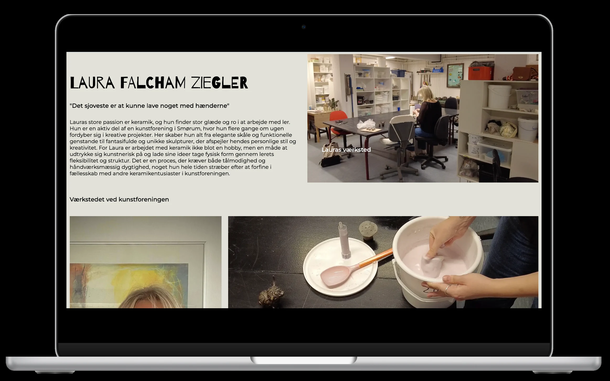

05 Indhold
Passionsite
+Virksomhedssite
Formål: I vores gruppe valgte vi Rubberduck som case til vores projekt, da deres hjemmeside var uoverskuelig og vanskelig at navigere. Vores mål blev derfor at redesigne siden, så den blev mere overskuelig, minimalistisk og samtidig havde et spændende og engagerende design.
Proces
Først skabte vi hver især passionsite, hvor vi interviewede Laura, som laver keramik. Her fik vi viden om brugen af udstyr fra Tech og Story Lab og redigering af video/indhold i Adobe Premiere pro og Audition.
I skabelsen af virksomhedssitet bestod processen af test af daværende site, brainstor, moodboard, styletile, wireframes, sitemap, prototype, test af første iteration, github, kode og tests.
Læring
I løbet af dette emne har jeg lært at redesigne en hjemmeside i et team, bruge SCRUM og trello, optage, redigere og implementere video indhold i VS code og samarbejde i et Github repository.